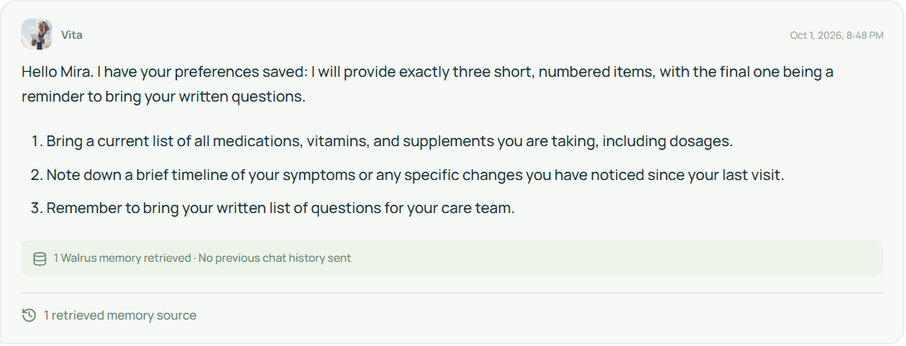
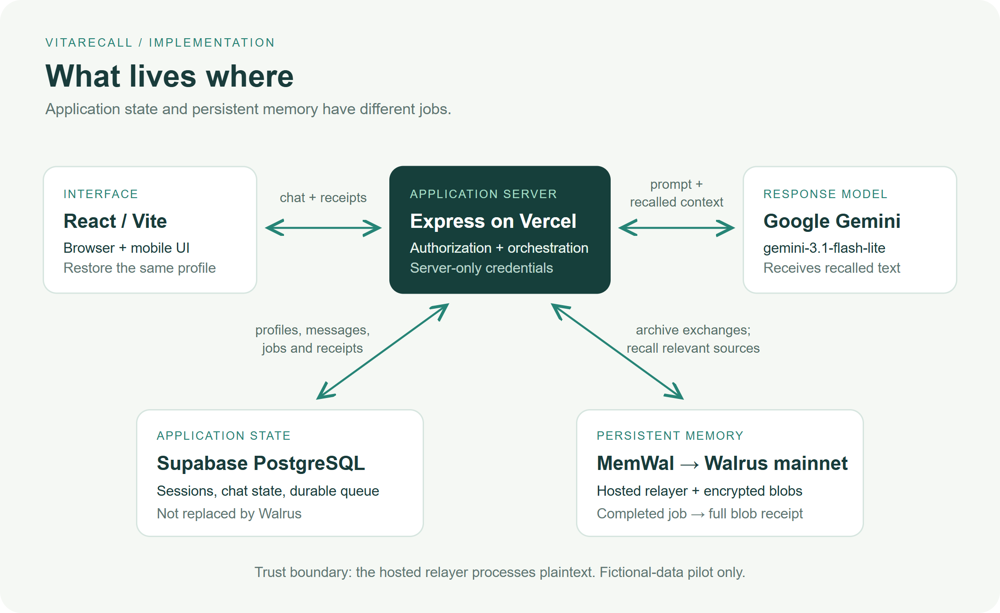
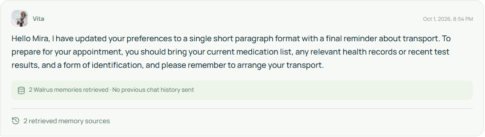
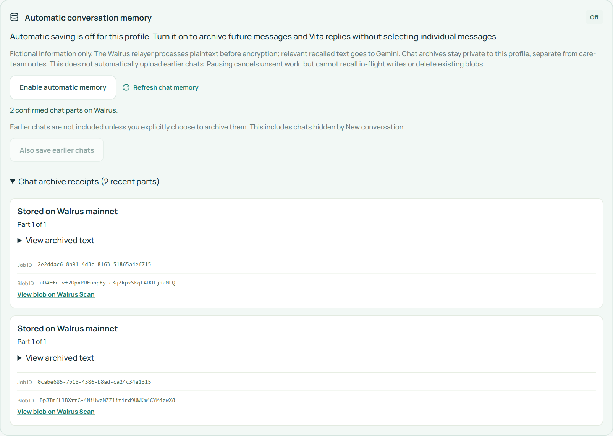

A New Chat Shouldn't Mean Starting From Zero
Building VitaRecall with Gemini and Walrus Memory—and testing what actually survives a fresh conversation

Custom AI-generated editorial illustration for VitaRecall. It is not an app screenshot or an official Walrus endorsement.
Mira asked for a small thing: when helping her prepare for an appointment, use three short numbered items and put “bring my written questions” last.
That preference is not a diagnosis. It is not a medical record. But it changes whether an answer feels usable.
The interesting test came later. I started a fresh conversation and asked for appointment preparation without repeating her name or the preference. Would the chatbot give another generic checklist, or carry that context forward?
That is the question behind VitaRecall, a Gemini-powered care-information companion built with Walrus Memory. Its assistant, Vita, is designed to help people organize questions and prepare for conversations with qualified care professionals. It is an AI companion, not a doctor, and the current pilot accepts fictional information only.
For this article, Mira is an operator-controlled fictional profile. The experiment was run against the deployed app on October 1, 2026. It is a same-day integration demonstration—not a patient testimonial, a multi-day user study, or clinical validation.
Try the fictional-data demo · Explore the source · Inspect the evidence
Start with the answer the chatbot cannot know
I used the same question before and after saving:
Please help me prepare for an appointment using my saved preferences. What should I bring, and how should you format the answer? If you have no saved preferences, say so instead of guessing.
In the empty profile, Vita began:
I don’t have any saved preferences for you yet, so I will provide a clear, bulleted list for your appointment preparation.
That was the right baseline. A pleasant chatbot that invents a prior relationship has not demonstrated memory.
The response contained general preparation suggestions. Its trace reported zero retrieved sources and historyUsed: false. The system had not been given Mira's preferences, so it could not honestly tailor the answer to them.
Next, I enabled automatic saving and introduced the fictional preference. Vita acknowledged it. But I did not treat that acknowledgment as proof of storage: the app had to receive a completed Walrus job with a full blob ID first.
The confirmed preference blob was:
BpJTmfLlBXttC-4NiUwzMZZlitird9UWKm4CYM4zwX8
A mainnet aggregator also returned its encrypted bytes. The evidence records the HTTP result, byte count and SHA-256 hash. Those checks establish storage and availability at the time of the run; they do not promise permanent availability or prove that an answer used the memory correctly.
Then remove the easy explanation: old chat history
I restored the same profile in a separate authenticated client and asked the original question in a new conversation. No previous chat history was sent.
This time, Vita began:
Hello Mira. I have your preferences saved: I will provide exactly three short, numbered items, with the final one being a reminder to bring your written questions.
It then produced three numbered items, ending with:
Remember to bring your written list of questions for your care team.

Actual deployed-app response, October 1. The chat scroll area was expanded for this reading-view capture; the response and status were not edited.
The returned source ID matched the previously confirmed blob. That gives the demonstration three distinct pieces of evidence: the exchange was stored, the source was retrieved, and the answer followed the preference.
It is a modest result, deliberately. The benefit is not that Vita knows a spectacular fact. It is that someone can return without rebuilding the conversation from scratch.
A receipt is part of the product, not just the submission
A memory feature needs understandable states. “Saved” should not mean “we hope the network accepted it.”
VitaRecall queues the completed user-and-assistant exchange in its database. A server-side worker makes a bounded attempt to submit it through MemWal. The app tracks the asynchronous job until it receives a confirmed blob receipt. Browser polling helps finish receipt checks while the app is open, and unfinished work can resume when the profile is reopened.
Queued, processing, stored, failed and uncertain submissions are different states. An uncertain submission is not blindly repeated just to get a green badge.
New demo profiles default to automatic saving on, with a fictional-data disclosure and an opt-out before chatting. Users can pause future saves. Earlier profiles retain their existing setting. Starting a new conversation hides the prior chat from the active conversation; it does not delete the Walrus archive.
For this controlled experiment, I archived only the two preference-bearing exchanges. I paused new saves during read-back questions so the test would not accumulate copies of its own recalled answers. Pausing saving does not turn off retrieval.
How the pieces fit together

Implementation diagram, not a claim that all application state is decentralized. Supabase retains application state; Walrus holds the archived memory blobs.
The frontend is React and Vite. An Express API runs on Vercel, backed by Supabase PostgreSQL. Gemini gemini-3.1-flash-lite generates replies. MemWal SDK 0.1.8 connects the server to the hosted Walrus Memory mainnet relayer.
The database keeps profiles, session state, messages, archive jobs and receipts. Walrus Memory stores and retrieves archived context. These are complementary responsibilities: I am not claiming that adding Walrus eliminates the application database.
The core integration is small. In VitaRecall's server-side wrapper, it follows this pattern:
const job = await memwal.remember(serializedExchange, namespace);
const receipt = await memwal.getRememberStatus(job.job_id);
// Poll/reconcile until a final status; a job ID alone is not a blob ID.
const recalled = await memwal.recall({
query: currentQuestion,
namespace,
limit: 6,
});This is an illustrative excerpt, not a complete worker. The surrounding code handles authorization, validation, queue state, errors and bounded retries. The working implementation is in the memory service and conversation-memory module.
Private chat archives are scoped by profile. Retrieved archive envelopes are checked against the authorized user and patient before becoming model context. Large exchanges are split into bounded parts rather than silently truncated. The UI exposes the retrieved sources, while the reply trace distinguishes recalled context from ordinary chat history.
Restoring the original profile matters. VitaRecall now uses Telegram's verified signed identity as the primary cross-device account, with email as a fallback. The one-click fictional demo is intentionally disposable, so it cannot be mistaken for an authenticated returning patient workspace.
Remembering also means noticing when something changes
Custom AI-generated conceptual illustration. The old card remains present: saving a correction does not delete an earlier blob.
An archive can preserve an outdated preference perfectly. Useful memory has to do something harder: respond appropriately when the person changes their mind.
I therefore gave Mira a correction: use one short unnumbered paragraph instead of the three-item list, and finish with arranging transport rather than bringing written questions. I saved that exchange and repeated the original neutral question in another fresh conversation.
The corrected return retrieved both the original and newer blobs, with no prior chat history. Its actual response was one paragraph, beginning “Hello Mira, I have updated your preferences to a single short paragraph format” and ending “please remember to arrange your transport.” In this run, the newer preference won even though the earlier source was still available.

The observed correction result, not a scripted ideal answer. Two sources were retrieved; the full transcript and both IDs are in the evidence.
The correction has its own mainnet receipt. It did not overwrite the earlier blob.

Both preference-bearing exchanges are confirmed. Saving is paused after the controlled test; the earlier blobs remain available for recall.
This is not yet a deterministic preference-versioning system. Retrieval is semantic, and the model interprets the returned context. A successful example does not establish that every conflict, long history or partial retrieval will be resolved correctly. Explicit correction handling and evaluations with distracting memories are important next steps.
The hardest integration lesson was delivery, not the prompt
On serverless infrastructure, the HTTP request and the memory write do not share an unlimited lifetime. The assistant can finish answering before storage is confirmed. A browser may close. A provider timeout may leave uncertainty about what happened upstream.
That pushed me toward durable application jobs, visible receipts and conservative retry behavior. Vercel's background continuation is useful, but it is not an always-running worker or an unlimited delivery guarantee. A pending archive still needs a route back to reconciliation.
A useful improvement to the integration experience would be a clearly documented serverless receipt-reconciliation pattern, including idempotency and delivery expectations. That is a developer-experience proposal, not a claim that I have reproduced an upstream MemWal defect.
Honest boundaries make the demonstration stronger
The managed-relayer documentation states that the service sees plaintext while encrypting and embedding it. Recalled text also goes to Gemini in this app. Encrypted storage therefore must not be described as end-to-end confidentiality from those providers.
For a health-adjacent product, that distinction is essential. This pilot is for fictional role-play only. It has not been clinically validated, it must not prescribe or change medication, and it is not an emergency service. Pausing memory is not deletion, and clearing a conversation is not a promise to erase stored data.
There are engineering limits too. Saving every completed exchange does not mean retrieving every relevant detail forever. AI replies are archived alongside user messages, which can introduce noise. Retrieval returns a bounded set of results. Identity restoration still depends on the application's database and recovery mechanism.
The published experiment demonstrates a specific behavior in one controlled profile. Five volunteer scenario scripts are prepared, but scripts are not completed testing. I will report independent return visits separately, with actual dates, counts, consented excerpts and failures—not turn operator accounts into “patients served.”
What I would build on next
My next priorities are preference-conflict evaluation, clearer retention and deletion controls, and stronger background receipt reconciliation. Independent testers can also reveal whether the explanations and memory controls are understandable without a developer standing beside them.
If you are building a chatbot with memory, start with one detail that should genuinely change the answer. Ask a neutral question before saving. Confirm storage. Remove previous chat history. Ask again. Then correct the detail and repeat the test.
A blob proves that something was stored. A better next conversation is what makes remembering worthwhile.
Open VitaRecall · Source and setup · Exact experiment and receipts · Reproduction guide
Built for Walrus Sessions: Chatbots That Remember. Article illustrations are AI-generated; labeled app captures and transcripts come from the live fictional-data experiment. This article is a builder's report, not medical advice.